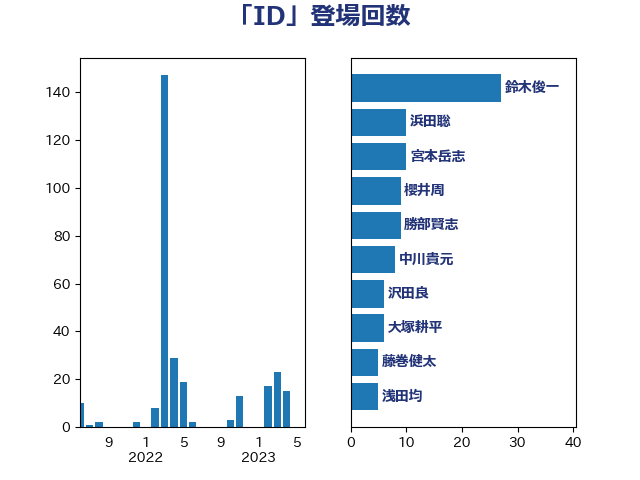

単語「ID」

| 鈴木俊一 | 自由民主党 | 27 回 |
| 浜田聡 | NHK党 | 10 回 |
| 宮本岳志 | 日本共産党 | 10 回 |
| 櫻井周 | 立憲民主党 | 9 回 |
| 勝部賢志 | 立憲民主党 | 9 回 |
| 中川貴元 | 自由民主党 | 8 回 |
| 沢田良 | 日本維新の会 | 6 回 |
| 大塚耕平 | 国民民主党 | 6 回 |
| 藤巻健太 | 日本維新の会 | 5 回 |
| 浅田均 | 日本維新の会 | 5 回 |
| 高木真理 | 立憲民主党 | 4 回 |
| 鈴木庸介 | 立憲民主党 | 4 回 |
| 高橋千鶴子 | 日本共産党 | 3 回 |
| 足立康史 | 日本維新の会 | 3 回 |
| 西村智奈美 | 立憲民主党 | 3 回 |
| 田村憲久 | 自由民主党 | 3 回 |
| 河野太郎 | 自由民主党 | 3 回 |
| 河西宏一 | 公明党 | 3 回 |
| 斉藤鉄夫 | 公明党 | 3 回 |
| 岡本三成 | 公明党 | 3 回 |
| 仁木博文 | 無所属 | 3 回 |
| 金子道仁 | 日本維新の会 | 2 回 |
| 野村哲郎 | 自由民主党 | 2 回 |
| 道下大樹 | 立憲民主党 | 2 回 |
| 西村康稔 | 自由民主党 | 2 回 |
| 米山隆一 | 立憲民主党 | 2 回 |
| 田村貴昭 | 日本共産党 | 2 回 |
| 漆間譲司 | 日本維新の会 | 2 回 |
| 本庄知史 | 立憲民主党 | 2 回 |
| 川合孝典 | 国民民主党 | 2 回 |
| 小野泰輔 | 日本維新の会 | 2 回 |
| 大家敏志 | 自由民主党 | 2 回 |
| 加藤勝信 | 自由民主党 | 2 回 |
| 鈴木敦 | 国民民主党 | 1 回 |
| 輿水恵一 | 公明党 | 1 回 |
| 舟山康江 | 国民民主党 | 1 回 |
| 羽田次郎 | 立憲民主党 | 1 回 |
| 緑川貴士 | 立憲民主党 | 1 回 |
| 簗和生 | 自由民主党 | 1 回 |
| 笠井亮 | 日本共産党 | 1 回 |
| 福山哲郎 | 立憲民主党 | 1 回 |
| 玉木雄一郎 | 国民民主党 | 1 回 |
| 横沢高徳 | 立憲民主党 | 1 回 |
| 森山浩行 | 立憲民主党 | 1 回 |
| 梅村聡 | 日本維新の会 | 1 回 |
| 杉本和巳 | 日本維新の会 | 1 回 |
| 市村浩一郎 | 日本維新の会 | 1 回 |
| 川田龍平 | 立憲民主党 | 1 回 |
| 川崎ひでと | 自由民主党 | 1 回 |
| 岡本あき子 | 立憲民主党 | 1 回 |
| 山際大志郎 | 自由民主党 | 1 回 |
| 山田太郎 | 自由民主党 | 1 回 |
| 山本博司 | 公明党 | 1 回 |
| 宮本徹 | 日本共産党 | 1 回 |
| 安江伸夫 | 公明党 | 1 回 |
| 奥野総一郎 | 立憲民主党 | 1 回 |
| 塩崎彰久 | 自由民主党 | 1 回 |
| 城内実 | 自由民主党 | 1 回 |
| 吉川元 | 立憲民主党 | 1 回 |
| 北神圭朗 | 無所属 | 1 回 |
| 住吉寛紀 | 日本維新の会 | 1 回 |
| 伊藤孝恵 | 国民民主党 | 1 回 |
| 中谷一馬 | 立憲民主党 | 1 回 |
| 三浦信祐 | 公明党 | 1 回 |
| たがや亮 | れいわ新選組 | 1 回 |
| こやり隆史 | 自由民主党 | 1 回 |